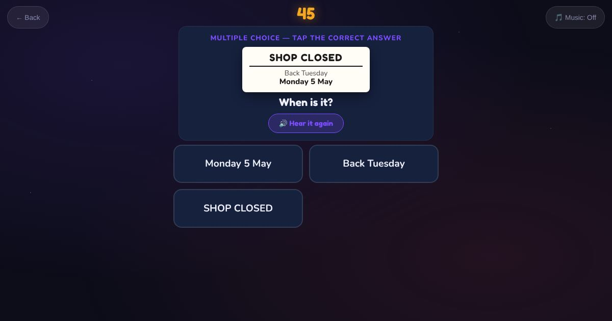

For teachers and tutors
About Read the Notice
A reading game with short everyday notices: an English class, a shop closed sign, a bus timetable, a doctor's appointment and a for sale sign. The learner answers one question: what is it about, when is it, or how much is it. It practises scanning for the key information.

How to play
- Read the notice.
- Read the question.
- Tap the answer.
Play it as a class
Choose Read the Notice in the Teacher Game, then ask the class where they see notices like these.